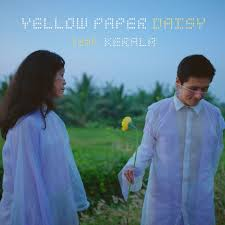

I’ve come a long way Riding my cycle Just to say how lovely you are I had to say it Without a doubt Cuz with that smile You took my heart Yellow paper daisy You’ve made me crazy, lately My heart’s been so racy, maybe I’m falling in love again I’m falling in love again I’m falling in love again I’m falling in love I’ve always Tried to tell you how I feel about you and me, my love I promise you With all my heart To hold your hand, when life gets tough Yellow paper daisy You’ve made me crazy, lately My heart’s been so racy, maybe I’m falling in love again I’m falling in love again I’m falling in love again I’m falling in love Love is in the air I am out of words But I’ll still try To show you how You’re a perfect kind Yellow paper daisy You’ve made me crazy, lately My hearts been so racy, maybe I'm falling in love again Yellow paper daisy You’ve made me crazy, lately My hearts been so racy, maybe I'm falling in love again I'm falling in love again I'm falling in love again I'm falling in love